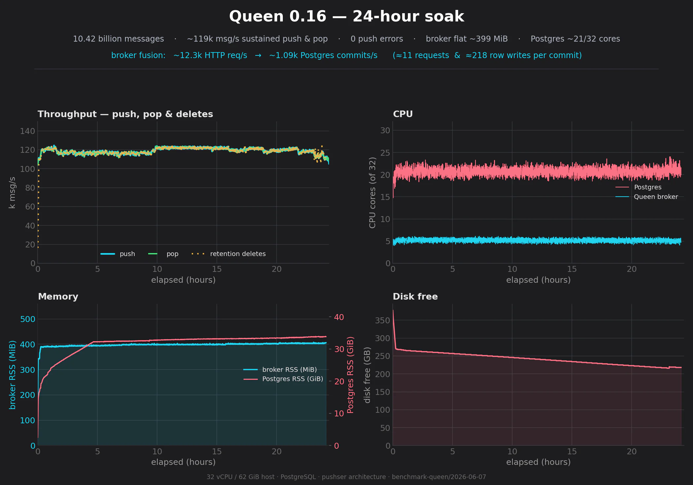
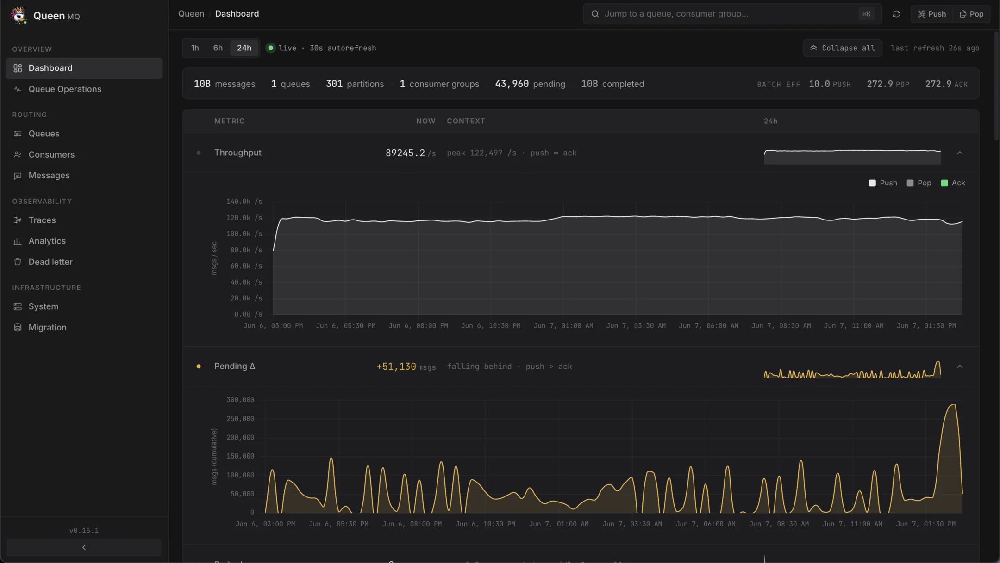
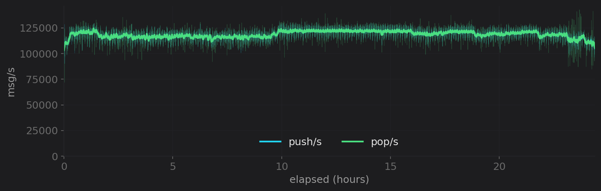
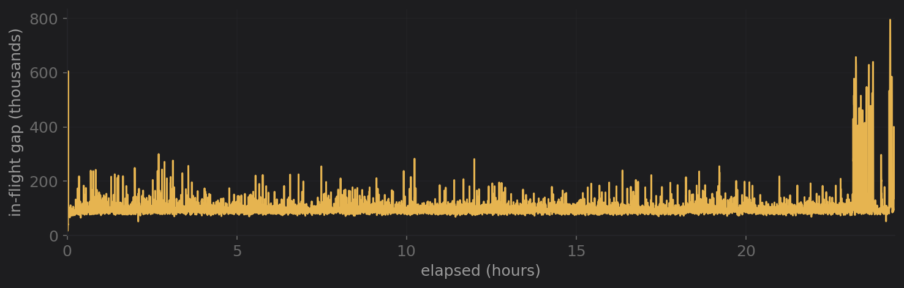
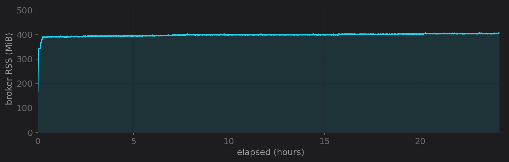
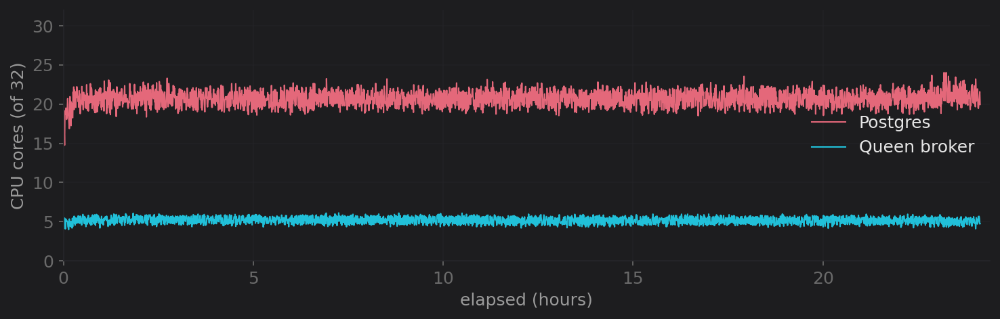
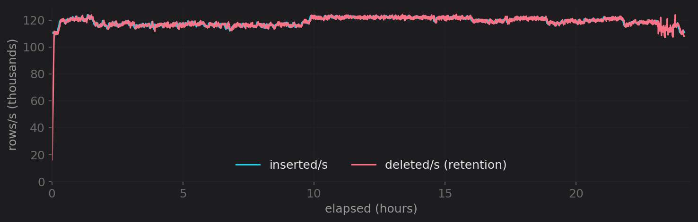
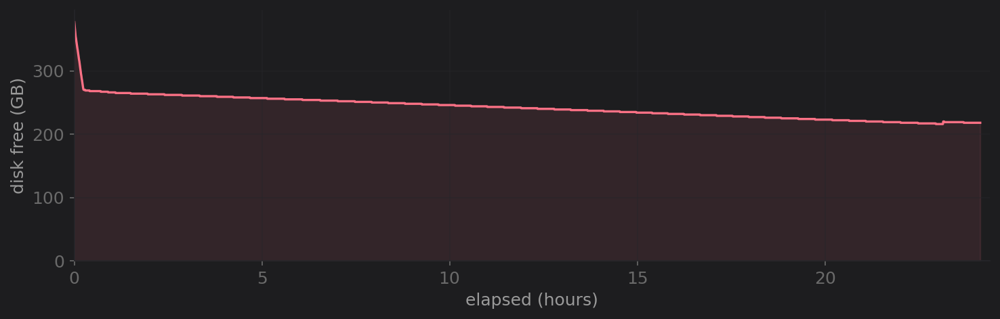
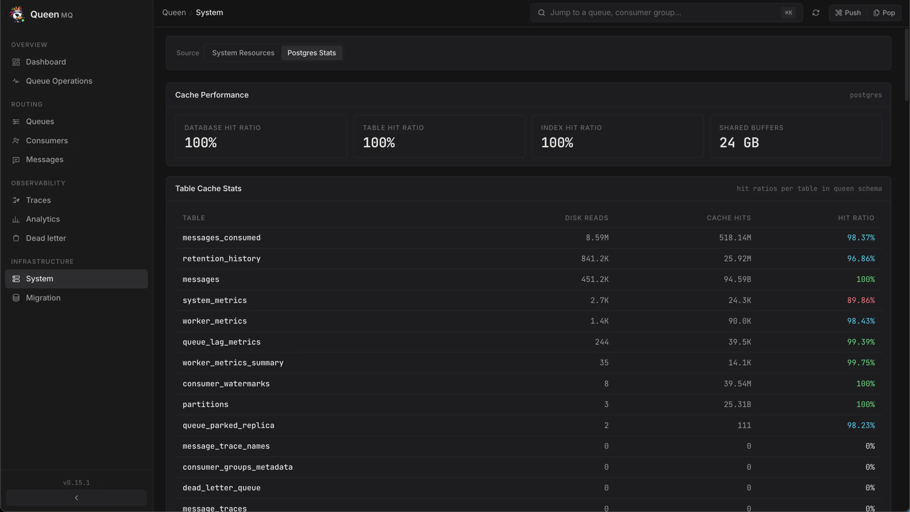
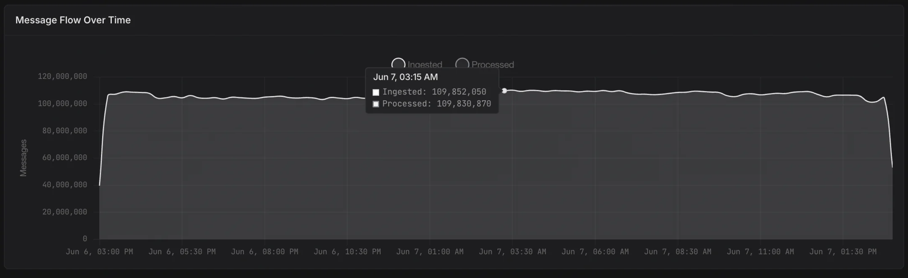

24 hours. 10.4 billion messages. Zero loss.
A single continuous run of Queen 0.16 (the pushser architecture) under a
balanced producer/consumer workload on a 32 vCPU / 62 GiB host with PostgreSQL.
The goal isn't a peak number, it's stability: hold a high rate for a
full day and prove nothing drifts, leaks, or loses a message. Raw data, the chart
builder, and the full standalone report live in
benchmark-queen/2026-06-07.

Headline
The live dashboard at the 24-hour mark
This is Queen's own dashboard, not an external tool, a screenshot taken live at the end of the run. 10B+ messages, 301 partitions, throughput holding in its band, pending bounded.

Throughput: flat for 24 hours
Loader-side push/s and pop/s sampled every 10 s for the whole run. Thin lines are raw samples; thick lines are the 5-minute rolling mean.

Correctness: 10.4 billion in, 10.4 billion out
Volume
10.42B Pushed10,422,886,560 Popped10,422,764,720 Avg rate~119k/sErrors
0 Push errors0 Consumer errors172 Empty pops136In-flight gap
0.001% Peak gap~0.3M vs total10.4B Lost0
Broker memory: a flat line
The single most important durability signal: does the broker leak over a long run?

CPU: the broker is cheap, Postgres does the work

Storage & retention
Queen keeps two kinds of data: the live queue (messages),
bounded by retention, and a durable record of every processed operation
(messages_consumed), the operation history you can query, replay against,
and prune on your own schedule.



messages) holds flat at ~15 GB for the
entire run, retention keeps the working set bounded. The
messages_consumed history grows with total volume (that's what an operation
log does); operators set a completed-retention window or prune it on demand. It is
data you choose to keep, not a leak.

Configuration
Broker (Queen 0.16 + Postgres)
| Host | 32 vCPU · 62 GiB · no swap |
NUM_WORKERS | 10 |
DB_POOL_SIZE | 50 (+250 sidecar) |
| Pop concurrency | static, max 16 |
| Push coalescing | hold 20 ms · pref 50 · max 500 |
| Retention | parallelism 8 · 5 s interval |
shared_buffers | 24 GB |
Loader (goload)
| Partitions | 300 |
| Producers | 650 |
| Consumers | 200 |
| Push batch | 10 |
| Pop batch | 300 · 10 partitions/pop · long-poll |
| Payload | 256 B |
| Completed retention | 120 s |
Reproduce it
The loader (goload), the monitor, the chart builder, the full standalone
HTML report, and every raw sample (loader log at 10 s, broker/PG monitor at 30 s,
final database snapshot) are in
benchmark-queen/2026-06-07.
0.16 throughput & scaling matrix
Batch sizing, partition scaling to 10k, and consumer-group fan-out on the same engine.
How much Postgres do I need?
Turn a target msg/s into a PG vCPU budget, derived from these benchmarks.
benchmark-queen/2026-06-07
Loader + monitor logs, final DB snapshot, the chart builder, and the standalone report.